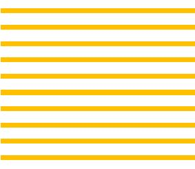
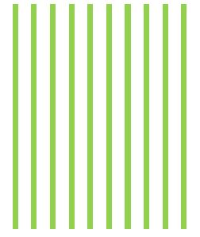

如果你單純地從畫布的頂端由左而右畫一條線，那麼它就只是一條線，如果每畫一條線，就下移一個單位，畫出多條平行線，那就構成了個簡單的圖樣（Pattern）。

另一個方式是由上而下畫線：

設計一個簡單的圖案，然後以一定的規則重複排列，本身就能構成美麗的圖樣。嗯？也許你覺得單純地直線與橫線不夠美？那就穿插著完成呢？
完成的效果就會呈現編織般的美感，基本的規則構成基本的圖樣，規則與規則之間的組合，會構成新的圖樣，有本《Pattern Design 圖解圖樣設計》就專門討論了這類設計，有興趣可以研究一下。
你也許看過許多 p5.js 的精采作品，出發點其實都是簡單的圖樣，逐步加入規則，讓圖樣逐步變化，更多的情況下是嘗試，在不經意間發現可呈現美的作品。
例如，在方才編織般美感的範例上，加上一些動畫變化如何？這並不難，只要改一下迴圈的邊界就可以了：
改變迴圈邊界是程式上的說法，從另一個角度來說，是改變每次在畫布上繪畫的範圍，一開始是畫 20 x 20，接著是 40 x 40，再來是 60 x 60、80 x 80 … 把一連串的畫框接連播放，就會有漂亮的動畫了。
接著，隨意做些變化，可能會有驚喜，例如，如果不清除前一次的繪圖結果會如何呢？
單純地將 background(127) 該行註解掉後，就呈現像掃描般的效果，你有一些想法，有一些規畫，有一些嘗試，有時就得到這類意想之外的樂趣！